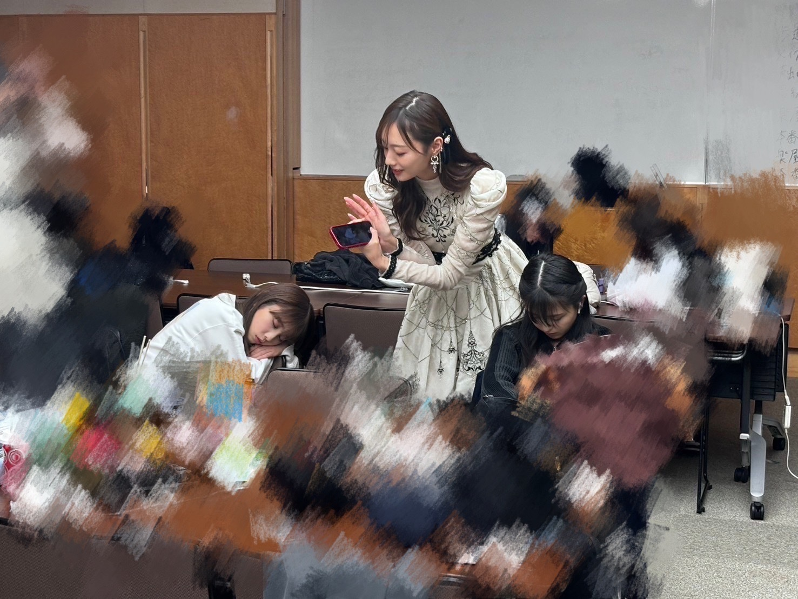
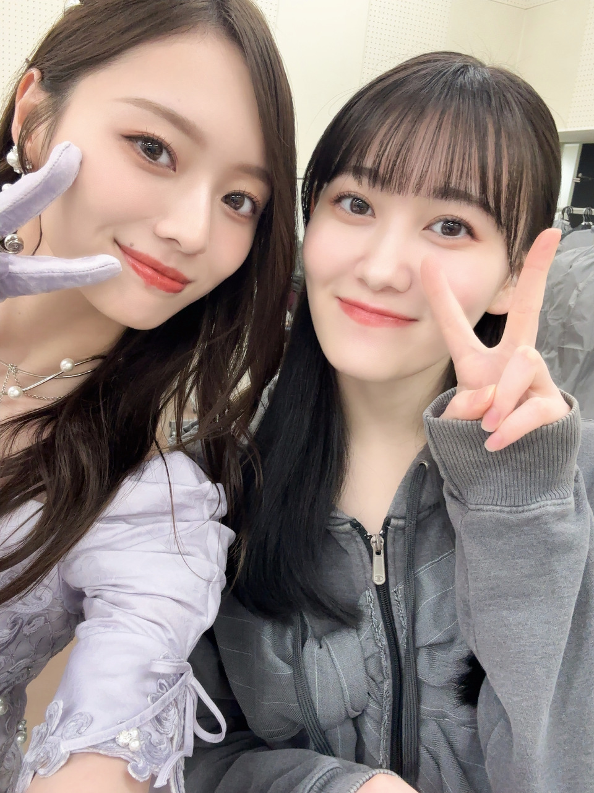
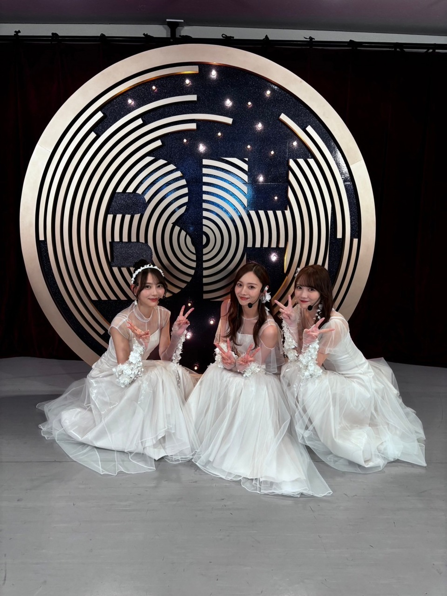
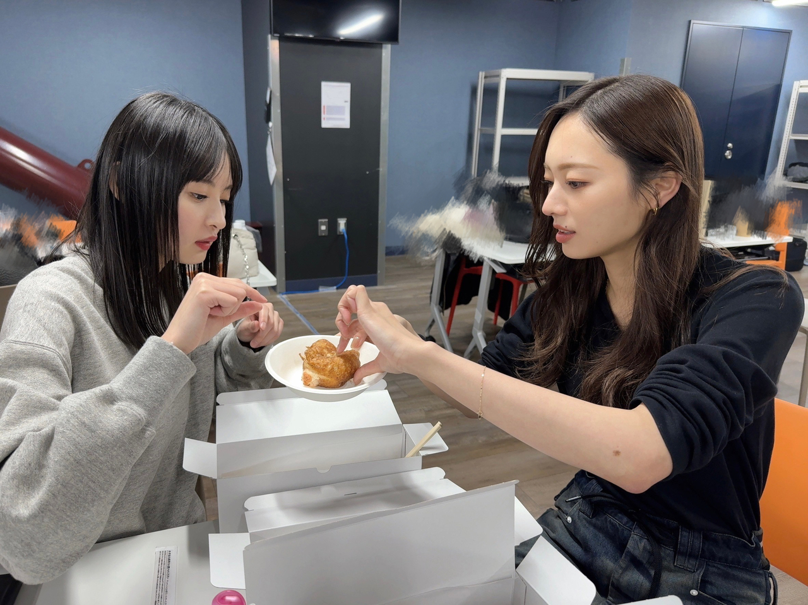
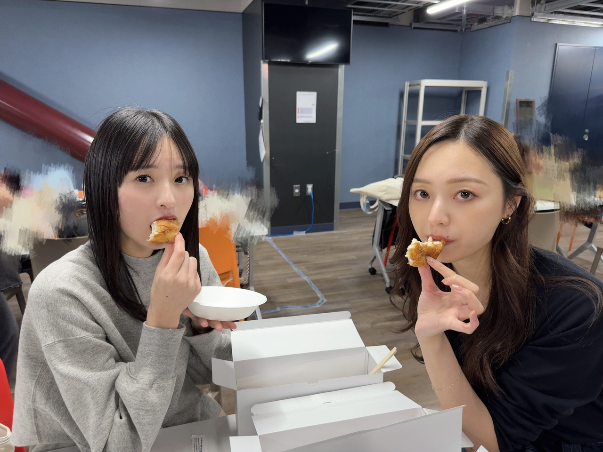

力を注げる限り、私に出来る限り
大変お世話になりました。

寝顔ハンター(^^)
あまりにも大切な毎日 、過ごしてました！
あたふたしていた年末も
本日で落ち着いてしまいますねえ
すきなんだよなあ、
このあたふた感

さっき撮りました。
つんつんってしてきたから
追いかけました。いつもありがと
年末、バタバタとしているようで
いつもと変わらない気もして
すごく楽しいです。
楽しかった！です。
今年が終わるのは、安心なのだけど
新年が始まってしまう事に対しては、まだ不安。
はやいよー。

皆様、改めて 今年も１年温かい応援を
本当にありがとうございました。
振り返ってみると
たくさん挑戦したな、今年は。と感じています。
攻めることをやめずに過ごした１年！
未来を見据えた活動を
色んな方が、多方面から、私たちに与えてくれました。
やり切ったー！と思える時もあれば
もっと出来たなー、と感じた日もありました。
これは、どんなときも！！
個人的には、新たな悩みに
ぶつかることだらけでした！
この、今の体制になって２年目、
２年目ってすごく難しいし
プレッシャーも凄まじかったです。
でも、やり遂げられたとき、
みんなと気持ちが重なったー！と感じられた時は
とてつもない高揚感。
こうした葛藤が
乃木坂のキャプテンとして生きてるって感じがして
なんだか尊かったです。
新年になれば６期生に会えるのかな。
楽しみだね(^^)
３期生には
ここまで来たからこそ もっと共に頑張りたいことたくさんあるし
４期生とは 同じ目線でいたい。
信頼しまくっているからこそ、私たちにはもっと甘えてこい！の気持ち。
皆の後輩が増えたとて、私たちにとっては永遠のかわいい後輩たちだから(^^)
５期生には
まだまだ教えたいこともたくさんあるし
みんなに期待していることもたくさんあります。
先輩になり、更に逞しくっていくであろうみんなの姿が楽しみで仕方ない！
大切なみんなと、
大切な思い出、たくさん残していけますようにー！


ドーナツわけっ子
個人的にも
挑戦的な２０２５年になる気がしています。
今から、ちょっと怖い。
前向きに、前向きに、
頑張らなきゃです！！
今年も紅白歌合戦の出演が叶いました。
心から、ありがとうございました。
皆様のおかげで
１０年連続、繋げることができました。
繋げることも難しいけれど
０から１にするのはきっともっと大変だったはす
初心を忘れず、感謝を忘れず、
２０２５年もがんばります。
引き続き紅白歌合戦お楽しみください！
皆様！良いお年を！
お見逃し無く！！
Original：https://www.nogizaka46.com/s/n46/diary/detail/103009?ima=4930&cd=MEMBER